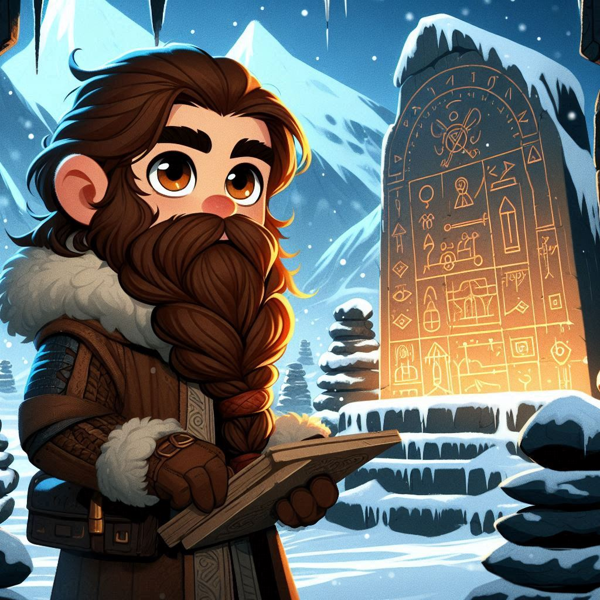

At the summit of the Mountains of Melody, Jimli finds himself
standing before an ancient shrine, where stone tablets are inscribed
with intricate musical notes and dance patterns. The shrine hums
with a low, resonant melody, and Jimli can sense the wisdom of ages
past in the air around him.
Just as he's about to walk past it, the ground beneath his feet
trembles slightly, and the melody from the shrine intensifies,
blocking the path forward. "Well, that's just rude," Jimli grumbles.
"I came to dance, not to read! But if I must, let's see if these
elves knew their jigs from their jags."
It quickly becomes clear that the shrine is more than just a
monument; it's a test! The ancient spirits that dwell here won't let
him pass until he's proven himself worthy by demonstrating his
understanding of the melodies inscribed on the tablets.
Jimli squints at the inscriptions, trying to make sense of the
ancient knowledge. "These stone-faced spirits better appreciate the
effort," he mutters, scratching his beard, "because I'm about to
give them the best crash course in dwarven determination they've
ever seen."
With a determined glint in his eye, Jimli begins to decipher the
ancient melodies, knowing that mastering this knowledge is key to
unlocking the path forward.